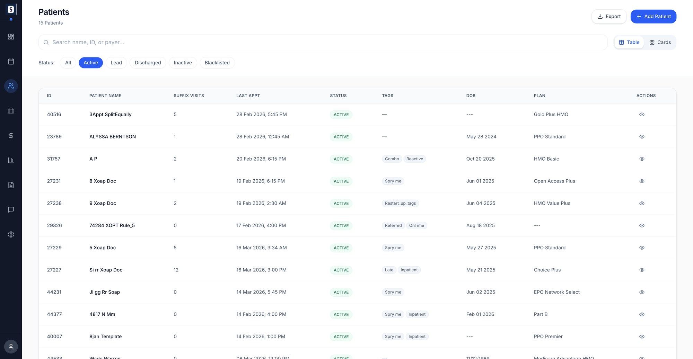
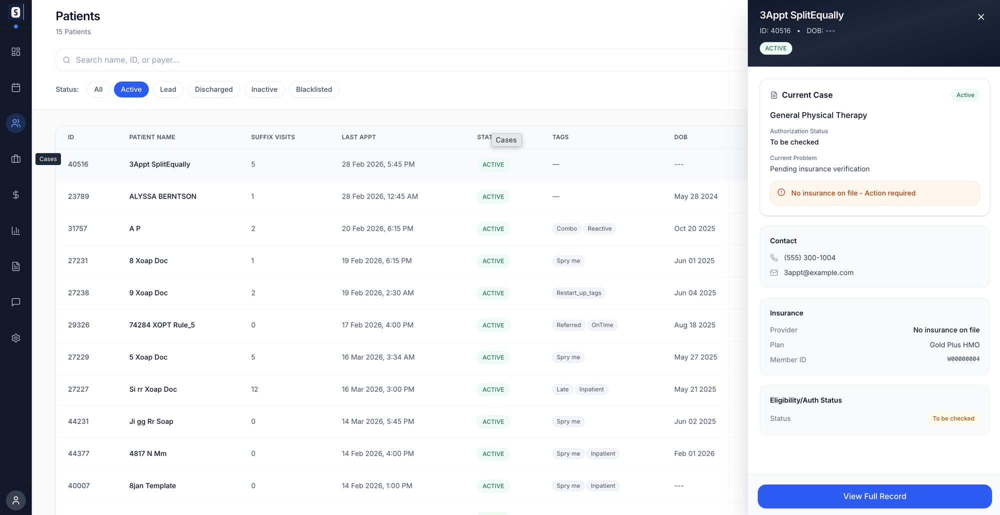
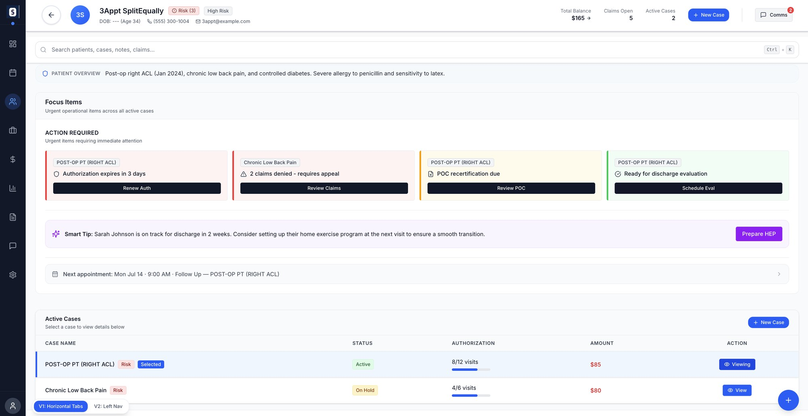
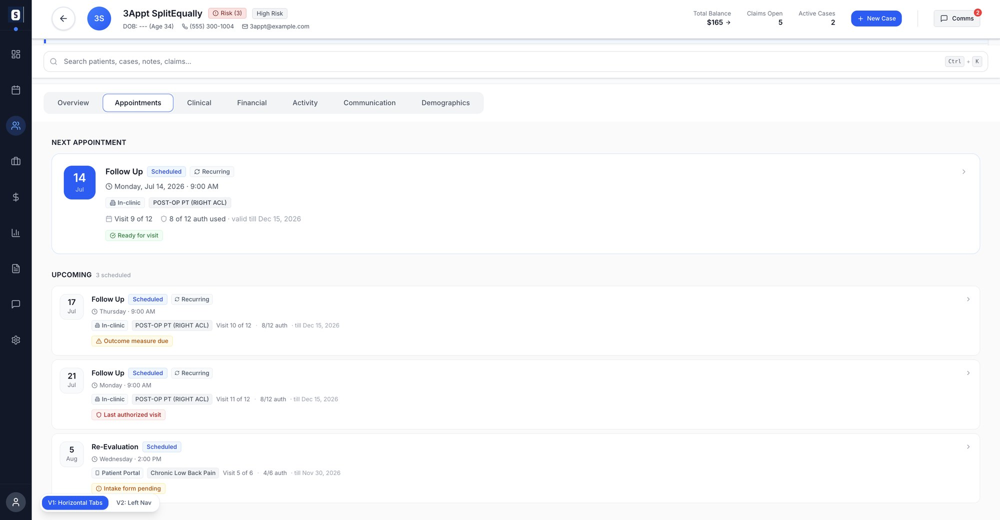
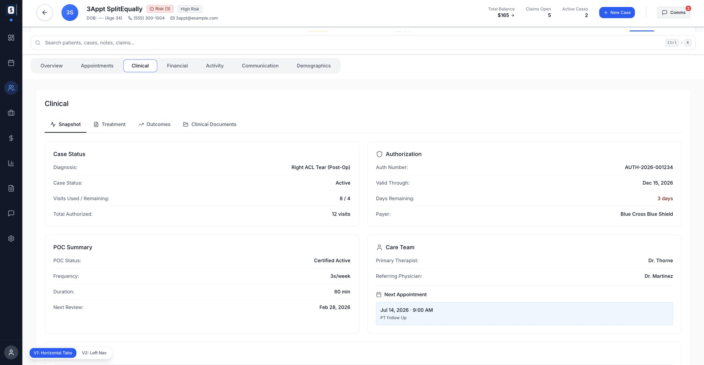

The old timeline described the system, not the patient.
Spry's patient view was a newest-first activity log written in backend language. I did not treat it as a visual refresh. I audited it first.
- Payments, refunds and totals looked identical, so you read line by line.
- System words everywhere: "Descending" where a person means "Newest first".
- Events shared a timestamp with no visible order or cause.
- Money, the thing billing cares about most, had no visual priority.
- A heavy static patient panel competed with the task, and nothing planned for history that keeps growing.
If it is a microsite, the timeline is the archive.
A timeline is a comfort pattern. Good for “what happened, when”, bad for “what do I do now”. No amount of polish fixes that, so I changed the model, not the styling.
The model I moved to
Checked with the people who do the work
I interviewed front desk, therapist and billing roles and asked about behavior, not layout taste: “What is the first screen a biller opens?” and “If you had to describe a biller's day in one sentence, what is it?”
Admin
Wants everything in one place.
Therapist
Wants documentation, not claims.
Biller
Wants claims and payment status first.
Data was scattered across the product with no single view. Our design lead's steer was readability over decoration, and curate, do not dump. Stripe and Shopify were the references for clarity in complex financial UI.
Patient first, or case first?
A patient can run several cases at once, say ACL surgery and chronic back pain. Which object the design anchors on decides what you can see, and what you can miss. I built both out and tested each against a biller's real day.
Case only
- +Clean and clinically focused
- +Each case reads like its own small chart
- -Hides the patient's total balance
- -A denial in an inactive case can go unseen
Patient anchored
- +Better financial visibility
- +One total balance, one history
- -More complexity on every screen
- -Harder to keep a screen on one episode of care
Case first, zoom out on demand
Case view is the default. One explicit toggle, All patient activity, shows the whole patient. Financial offers both a Patient ledger and a Case ledger. I did not remove the tension. I handed it to the user as a control.
Grouped by domain
Timeline entries are grouped Clinical, Insurance and authorization, Billing, each with a visible case tag.
Role changes defaults, not layout
Therapist opens to Clinical, biller to Billing, admin to everything. One workspace, never separate builds.
Which case am I in?
The Overview opens on a Selected case card with an explicit name and status badge.
Some of the missing UI was missing data.
I kept fixing the table until I asked what each row actually represents and which states it can be in. Four things had no real model, so no screen could show them honestly.
Authorization
From “4 of 12 visits” to a real object.
Plan of care
Its own status and lifecycle.
Claim
A real state machine.
Ownership
Every denied claim and expiring authorization gets an assignee, so nothing sits in a shared queue with no name on it.
Severity on top of all of it
One shared vocabulary for how loud an alert should be.
These are not decorations. They are the direct result of asking: what object is this, and what state can it be in?
Peek first. Open the record when you need it.


Open a patient and see what needs you today.

- 1One-line patient overviewDiagnoses, allergies and context in a sentence, so it is never behind a click.
- 2Action required, by severityCards are colored red, amber, green, tagged with their case, and each carries one button: Renew Auth, Review Claims, Review POC, Schedule Eval.
- 3Smart tip, kept apartThe AI nudge sits in its own purple band, so suggestions never get mistaken for required work.
- 4Active cases, explicitlySelected and Viewing tell you which case you are in, with authorization progress and the amount per case.
- 5Always-on totalsBalance, open claims and active cases stay in the header whichever tab you are on.
Each tab answers one question.


Overview
What needs me today
Appointments
When are they in
Clinical
Where the care stands
Financial
Patient or case ledger
Activity
The archive, filterable
Communication
Who said what
Demographics
Patient shell, never case-scoped
What I would carry forward, and what I would change.
Shipping was never the end of the thinking. The honest accounting.
Missing UI is often missing data modeling. Authorization, POC and claims needed real objects and states before any screen could show them honestly.
Patient versus case is handed to the user as a toggle, not resolved. A biller and a therapist would each make that call differently.
Bring the entity model into the same round of role interviews that shaped the IA, not after. State machines go subtly wrong without the people who live in the exceptions.